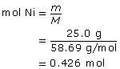
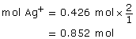
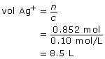
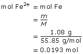
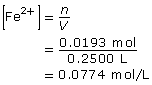
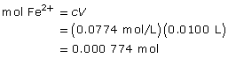
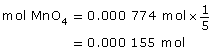
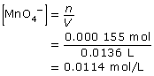

Module 3—Electrochemical Reactions
 Self-Check Answers
Self-Check Answers
Contact your teacher if your answers vary significantly from the answers provided here.
SC 5.
Practice 3.
Ni(s) → Ni2+(aq) + 2e– (oxidation)
(Ag+(aq) + 1e– → Ag(s)) × 2 (reduction)
Ni(s) + 2 Ag+(aq) → Ni2+(aq) + 2 Ag(s) (redox)



The volume of 0.10 mol/L silver ion solution that will react is 8.5 L.
Practice 5.
First, calculate the concentration of the Fe2+ primary standard solution:


Titration
(Fe2+(aq) → Fe3+(aq) + 1e–) × 5 (oxidation)
MnO4–(aq) + 8 H+(aq) + 5e– → Mn2+(aq) + 4 H2O(l) (reduction)
5 Fe2+(aq) + MnO4–(aq) + 8 H+(aq) → 5 Fe3+(aq) + Mn2+(aq) + 4 H2O(l) (redox)



The concentration of the permanganate solution is 0.0114 mol/L.